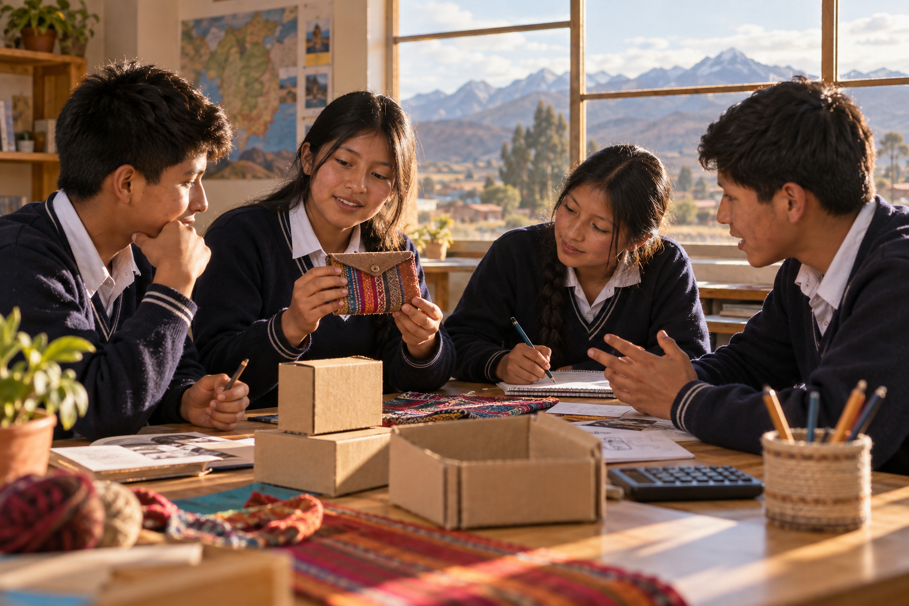

Comprende a las personas
Observa necesidades y diseña una propuesta que ofrezca un beneficio claro a quienes la usarían.
Educación para el Trabajo · 4.º A
Una ruta de tres meses para convertir una idea en una propuesta útil: observar lo que necesita la comunidad, diseñar con creatividad y comprobar si el proyecto puede funcionar.
Tu propósito de aprendizaje
Durante este recorrido desarrollarás la competencia “Gestiona proyectos de emprendimiento económico o social”. Aprenderás a reconocer necesidades cercanas, crear una propuesta de valor, organizarte con otras personas y evaluar los resultados con evidencias. El contexto de Rosaspata y Puno será un punto de partida para imaginar soluciones pertinentes.
Observa necesidades y diseña una propuesta que ofrezca un beneficio claro a quienes la usarían.
Acuerda metas, distribuye tareas, escucha ideas y aporta para lograr un resultado compartido.
Planifica procesos, recursos y herramientas sencillas para crear o brindar un producto o servicio.
Compara lo planeado con lo obtenido, calcula costos básicos y mejora según la opinión de usuarios.
Punto de partida · Semana 1
Mira el video con curiosidad y también con mirada crítica: ¿qué recursos, tiempo, herramientas o gastos sí podría necesitar cada idea? Esa pregunta guiará el primer módulo.
Abrir el video en YouTube ↗Una semana, un avance concreto
3 meses · 12 módulos · 1 módulo por semana.
Cada semana termina con una evidencia sencilla que te ayuda a construir tu proyecto paso a paso.
Comprender necesidades reales y explorar posibles respuestas.
Analizar el video inicial e identificar qué se necesita para poner en marcha cada idea, además del dinero.
Idea, oportunidad y modelo de negocio; diferencia entre capital, costos, recursos disponibles y trabajo propio; lectura crítica de mensajes publicitarios.
Reconocer habilidades propias, recursos accesibles y apoyos posibles sin comprometer dinero.
Habilidades, recursos humanos y materiales, herramientas compartidas, saberes locales y redes de apoyo; cuidado de recursos y uso responsable.
Observar el entorno y formular una necesidad concreta de un grupo de personas.
Usuario, necesidad, observación y preguntas abiertas; registro respetuoso de opiniones; problemas cotidianos de la escuela o comunidad.
Conectar una necesidad con una propuesta útil, clara y distinta de las alternativas existentes.
Propuesta de valor, beneficios, alternativas y diferenciación; criterios de utilidad, accesibilidad, pertinencia cultural y cuidado ambiental.
Dar forma a la propuesta y entender sus números básicos.
Comparar maneras de ofrecer una solución sin asumir que alguna funciona automáticamente ni que carece de costos.
Productos y servicios; encargos, preventa responsable, intermediación, servicios por habilidad y difusión digital; riesgos, compromisos y permisos.
Representar cómo se prepara un producto o se brinda un servicio con pasos claros y seguros.

Secuencia de actividades, materiales, herramientas, calidad, seguridad e higiene según el tipo de propuesta; prototipo de papel o demostración simulada.
Estimar si los ingresos previstos podrían cubrir los recursos usados en una propuesta.
Costos fijos y variables, costo por unidad, precio, ingreso, ganancia y punto de equilibrio con ejemplos ficticios en soles.
Crear un mensaje que explique la propuesta con claridad, honestidad y respeto a las personas usuarias.
Audiencia, canales de comunicación, atención al cliente, imagen y promoción; publicidad honesta, protección de datos y verificación de afirmaciones.
Validar la idea con cuidado, evaluar evidencias y compartir una propuesta final.
Organizar tareas, plazos y responsabilidades para que la idea se pueda explicar y poner a prueba.
Meta, actividades, cronograma, roles, colaboración, acuerdos, materiales y gestión básica de riesgos.
Obtener comentarios honestos sobre un prototipo antes de pensar en ofrecerlo de verdad.
Prueba pequeña y segura, preguntas neutrales, observación, criterios de aceptación y análisis de sugerencias.
Evaluar la viabilidad de la idea considerando beneficios, costos, seguridad y efectos en el entorno.
Resultados esperados frente a evidencias, mejora continua, riesgos, sostenibilidad, trato justo, consumo responsable y consecuencias sociales o ambientales.
Comunicar una propuesta de emprendimiento de baja inversión basada en una necesidad real y en cálculos transparentes.
Problema, personas usuarias, propuesta de valor, proceso, recursos, costos estimados, prueba realizada, aprendizajes y siguiente mejora.
Tu cierre de ruta
Al final tendrás una propuesta que explica a quién ayuda, cómo funcionaría, qué recursos podría necesitar y qué aprendiste al ponerla a prueba. No buscamos prometer ganancias: buscamos investigar, decidir con responsabilidad y mejorar.